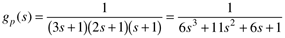
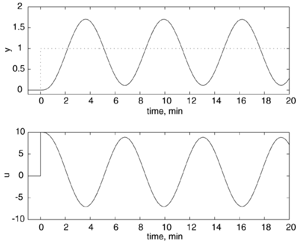
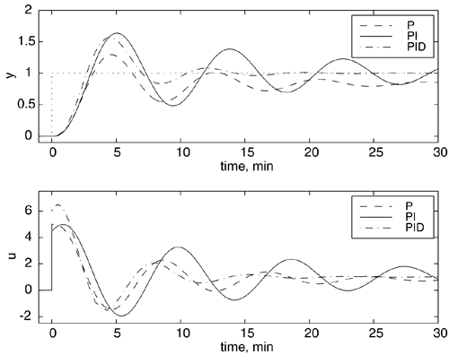
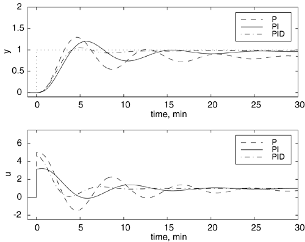

| [ Team LiB ] |
|
6.2 Closed-Loop Oscillation-Based TuningA PID controller has three tuning parameters. If these are adjusted in an ad hoc fashion, it may take a while for satisfactory performance to be obtained. Also, each tuning technician will end up with a different set of tuning parameters. There is plenty of motivation, then, to develop an algorithmic approach to controller tuning. The first widely used method for PID tuning was published by Ziegler and Nichols in 1942. Ziegler-Nichols Closed-Loop MethodThe Ziegler-Nichols closed-loop tuning technique was perhaps the first rigorous method to tune PID controllers. The technique is not widely used today because the closed-loop behavior tends to be oscillatory and sensitive to uncertainty. We study the technique for historical reasons, and because it is similar to commonly used automatic tuning ("autotune") techniques covered in Chapter 11. The closed-loop Ziegler-Nichols method consists of the following steps.
Tyreus and Luyben have suggested tuning parameter rules that result in less oscillatory responses and that are less sensitive to changes in the process condition. Their rules are shown in Table 6-2.
Example 6.1: Third-Order ProcessConsider the third-order system used in Example 5.3, with a time unit of minutes  Recall that a P-only controller caused the closed-loop to be on the verge of instability (continuous oscillation) when the value of the controller gain was kc = 10. This is the critical proportional gain, kcu. From the response shown in Figure 6-2 we see that the ultimate period (period of oscillation) is Pu = 6.2 minutes. Figure 6-2. Response to unit step setpoint change at t = 0; kcu = 10. Notice that Pu = 6.2 minutes. The closed-loop responses for Ziegler-Nichols tuning for P, PI, and ideal PID controllers (based on Table 6-1) are shown in Figure 6-3. Notice that a P-only controller has offset, as expected. Also, all the responses are quite oscillatory; this is one of the major disadvantages to the Ziegler-Nichols tuning method. It typically results in more oscillatory behavior than would be allowable in a typical process plant. The tuning parameters are also not very robust, that is, they are very sensitive to process uncertainty. If the process conditions change, then the control system may become unstable. Figure 6-3. Response to unit step setpoint change. Comparison of Ziegler-Nichols P, PI, and PID tuning rules. Notice the "spike" in the manipulated input for the PID controller. The closed-loop responses for Tyreus-Luyben tuning for P (assumed to be the Ziegler-Nichols value), PI, and PID controllers are compared in Figure 6-4. The Tyreus-Luyben parameters result in less oscillatory responses and will be less sensitive to uncertainty. Figure 6-4. Response to unit step setpoint change. Comparison of Tyreus-Luyben P, PI, and PID tuning rules. Notice the "spike" in the manipulated input for the PID controller. Note that the PID controllers simulated in Figures 6-3 and 6-4 are based on an ideal derivative of the error. A problem is that this results in a "spike" in the manipulated input when a step setpoint change is made. Also, an ideal derivative controller will be more sensitive to measurement noise. |
| [ Team LiB ] |
|